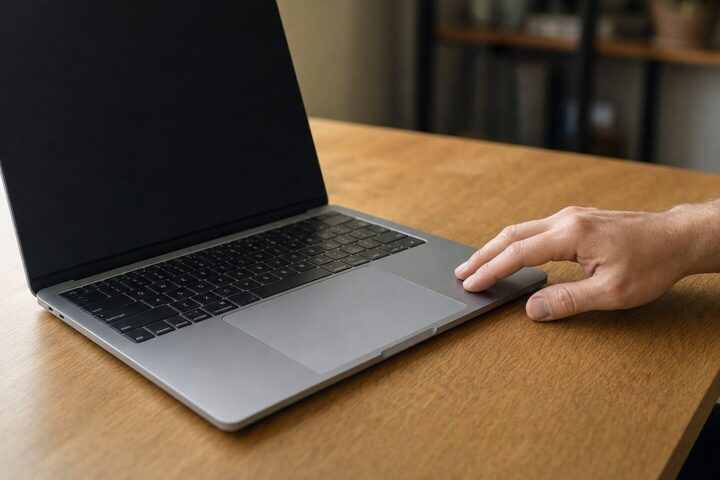
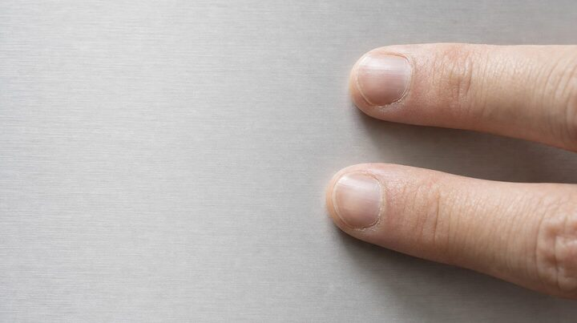
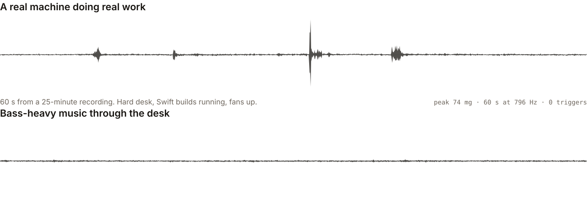
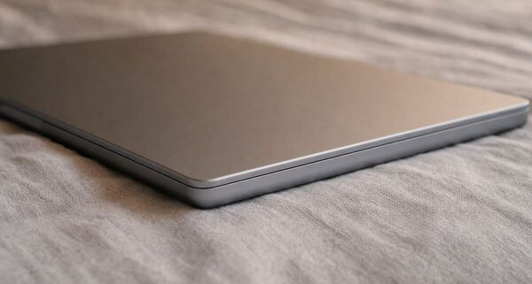

Back Tap, for your Mac.
Double-tap the body of your MacBook and it fires a keyboard shortcut, or runs any macOS Shortcut. Tunk reads the accelerometer already inside the machine at 796 Hz and picks your deliberate tap out of everything else the laptop feels: typing, trackpad clicks, a mug set down, footfall, bass through the desk.
The repository is private while the detector is being tuned. No mailing list yet.

Two taps, two actions
A single tap and a double tap each bind to their own action, the way Back Tap gives Double Tap and Triple Tap separate rows. Pick a hotkey, pick a Shortcut, or leave one unbound.
-
Single tap
One knock on the chassis. Ships unbound, on purpose: every mug set down and every footfall is also one transient, so a single tap is a far weaker signal than a pair. Bind it if you want it, knowing that.
-
Double tap
Two knocks in quick succession, inside a join window of about 220 ms. This is the gesture Tunk is built around, because requiring two deliberate onsets is what keeps the world from triggering it.
-
Triple tap
Built but not wired. The grouping already counts taps, so turning triple on later costs nothing and, by design, will not change how double feels.
What a tap can fire
A key combination, or anything you have built in Shortcuts
Tunk posts a real key event, so any app already listening for a global hotkey works without knowing Tunk exists. Bind a Shortcut instead and a tap runs whatever that Shortcut does.
A global hotkey
⌃⌥⌘V
You choose the combination. Pick a rare one, because Tunk posts it into whatever is focused. Left and right modifiers are kept distinct, since an app bound to the right-hand key ignores the left one.
A macOS Shortcut
shortcuts run “Start dictation”
Picked by name from your Shortcuts library. Tunk spawns it directly rather than going
through the shortcuts:// URL scheme, which measured up to 345 ms on its own
and raises a modal dialog when a name does not resolve.
Nothing
unbound
The default for single tap. A gesture with no action bound is detected, counted in the tap monitor, and then dropped.
Right Shift is refused as an emitted binding, with an explanation rather than silence. The PRD reserves it as your manual VoiceInk key, and a synthesised one would collide.
The reason it exists
Start dictation without reaching for a key
Tunk began as one problem: toggling dictation hands-free. Bind the double tap to VoiceInk's Second Shortcut, set that shortcut to toggle, and you start and stop dictating by tapping the laptop. Your existing manual binding keeps working, untouched.
Tunk refuses to emit a bare Right Shift, which is the key VoiceInk uses by default, so the two never fight over the same binding.
Any app with a global hotkey works the same way. Bind a Shortcut instead and a tap can run whatever you have built there.

How it works
Five steps, and one of them is the hard one
Tunk never touches the microphone or the camera. It reads one motion sensor, and everything else is signal processing.
-
Read the sensor
Apple Silicon MacBooks carry an accelerometer on the SPU, reachable over HID. It sits idle until you set a report interval, which is the whole trick. Set it and the stream arrives at a measured 796 Hz, one sample every 1.25 ms, unbatched, with sensor-to-callback latency of 0.34 ms at p95.
-
Find the onset
A finger striking aluminium makes a sharp transient: energy appearing in a couple of milliseconds and decaying fast. Tunk looks for that shape rather than for loudness, because loudness alone is what a closing lid and a dropped phone also have.
-
Group the beats
Onsets close together in time become one gesture carrying a count. A group fires one confirm window after its last onset, not instantly, which is what lets triple tap arrive later without changing how double tap feels.
-
Suppress while you work
Every keystroke, trackpad click and trackpad touch opens a short suppression window during which onsets are discarded. Typing is the main way a tap detector fails, and this gate is the defence. The cost is real and deliberate: you cannot trigger Tunk mid-word.
-
Dispatch
A confirmed gesture posts your key combination, or spawns your Shortcut by name. Tunk checks a Shortcut still exists before running it, and a missing one fails quietly into an error state in the menubar rather than raising a dialog under your hands.
The problem, drawn to scale
What a laptop feels when nobody taps it
Both traces below are real recordings from the dataset, drawn at the same vertical scale. Neither produced a trigger. The detector has to sit above this and still answer a fingertip.

data/raw. Vertical axis is deviation from the resting
1 g reading. No smoothing beyond a min and max envelope per pixel column, which keeps
every peak.
Honesty
What has been measured, and what has not
Tunk is a detector, and detectors invite made-up percentages. Everything in the left column came off real recordings on real hardware. Everything in the right column is unknown, and stays unlabelled until it is not.
Measured
- Sensor rate
- 796 Hz
- Sensor to callback, p95
- 0.34 ms
- False triggers, recorded desk use
- 0 in 28 min
- Idle CPU
- ≈ 2%
Sustained, unbatched, samples exactly 1.25 ms apart.
Transport costs under a millisecond, so the latency budget is spent on deciding, not on plumbing.
Real sessions: Swift builds and fans on a hard desk, plus layered 45, 60 and 80 Hz bass through the same desk.
Continuous sampling on an otherwise idle machine.
Measured on one machine: an M4 Max MacBook running macOS 26.5.
Not measured yet
- Detection rate on deliberate taps. No percentage is published because no held-out tap set has been scored.
- End-to-end latency from your second tap to the action firing.
- False positives while typing, on a dedicated typing recording.
- Anything on a lap, a bed, a cushion, or any surface other than a hard desk.
- Any MacBook other than the one it was built on.
- Battery cost over a full charge cycle.

These are the numbers that decide whether Tunk ships. They will appear here when the harness produces them, pass or fail.
How reliability gets decided
Rather than a number chosen to sound good, the build runs a method. A capture tool logs the raw sensor stream with timestamps and ground-truth labels. Part of every recorded category is held back as a test set the tuning never sees, so a threshold cannot be quietly fitted to the exam. A scoring harness replays those recordings through the same detector code that runs live, sample for sample, with no clock in the decision path, so a replay and a real tap produce identical results. Separate critic agents run that harness and report the gap.
The felt reference for acceptance is Back Tap on an iPhone. A build that scores well and still feels like it is ignoring you has not passed.
What it needs
An Apple Silicon MacBook
The sensor lives in the laptop. A Mac mini, Studio or Pro has nothing to tap. Built and measured on an M4 Max, macOS 26.5.
Two permissions
Input Monitoring to read the sensor and see keyboard and trackpad activity for the suppression gate. Accessibility to post the key event your tap is bound to.
Nothing else
Menubar only, no dock icon, no window beyond a small settings panel. No microphone, no camera, no network. Nothing leaves the machine.
Questions
What is Tunk?
Tunk is a macOS menubar app that turns a physical tap on your MacBook's body into an action. You double-tap the chassis and Tunk fires a keyboard shortcut you chose, or runs any macOS Shortcut. It is the same idea as Back Tap on iPhone, where tapping the back of the phone runs an action, applied to a laptop. Tunk reads the accelerometer built into the machine rather than using the microphone or the camera.
How does Tunk detect a tap?
Tunk reads the accelerometer that Apple Silicon MacBooks expose over the HID interface, at a measured 796 Hz. It looks for sharp transient onsets in that stream and groups them by the interval between them, so two deliberate onsets close together read as a double tap. It also watches keyboard and trackpad activity and suppresses onsets for a short window after each one, which is how typing is kept from triggering it. A consequence of that gate is that you cannot trigger Tunk in the middle of typing.
Can I download Tunk yet?
No. Tunk is in development and there is no release to download. The sensor layer, the action dispatch and the recording harness work, and the detector is being tuned against recorded sessions. The build ships when the measured detection and false-trigger numbers hold up on recordings the tuning never saw.
Will typing set Tunk off?
Preventing that is the main design goal, and it is not yet proven. Two mechanisms work against it: a double tap requires two deliberate onsets inside a narrow window, and detection is suppressed for a short gate window after every keystroke and trackpad event. Across 28 minutes of recorded real desk use, which included Swift builds, fans and bass-heavy music through the desk, the current build produced zero triggers. A typing false-positive rate on a dedicated typing set has not been measured yet, so no rate is claimed here.
What can a tap do?
A tap can post a global hotkey of your choosing, or run a macOS Shortcut by name, or do nothing. Single tap and double tap each bind to their own action, the same way Back Tap gives Double Tap and Triple Tap separate rows. Single tap ships unbound by default, because a single transient is a much weaker signal than a pair and every mug set down produces one.
How do I use Tunk for hands-free dictation?
This is the use case Tunk was built for. In VoiceInk, open Settings and then Shortcuts, add a Second Shortcut bound to a rare key combination, and set its recording mode to toggle. Then bind Tunk's double tap to that same combination. Tapping the laptop starts dictation and tapping again stops it, and your existing manual VoiceInk binding keeps working untouched. Tunk deliberately refuses to emit a bare Right Shift so that it never collides with the default VoiceInk primary shortcut.
Which Macs does Tunk work on?
Tunk needs the accelerometer that Apple Silicon MacBooks expose through the SPU HID interface, so it is a laptop-only app. Every number published so far was measured on one machine, an M4 Max MacBook running macOS 26.5. Other Apple Silicon MacBook models expose the same sensor interface, but Tunk has not been measured on them yet.
What permissions does Tunk need?
Two. Input Monitoring, so Tunk can read the accelerometer and watch keyboard and trackpad activity for the suppression gate. Accessibility, so it can post the key event your tap is bound to. Tunk runs with the App Sandbox off, which is what reading the sensor requires. It sends nothing off the machine.
Does Tunk drain the battery?
Tunk samples continuously, so it always costs something. Measured idle CPU is about 2 percent on the machine it was built on. Battery impact over a full charge cycle has not been measured and is not claimed.
Does Tunk use the microphone?
No. Tunk reads only the accelerometer, a motion sensor. It never opens the microphone or the camera, and it sends no data off your machine.
It is not finished, and that is the point of this page
The sensor works, the actions fire, the recordings are stacking up. What is left is the part that decides whether the thing is any good: proving the detector answers a real tap and ignores a real day. When those numbers exist, they go on this page, whatever they say.
Private for now. It opens when the detector holds up.